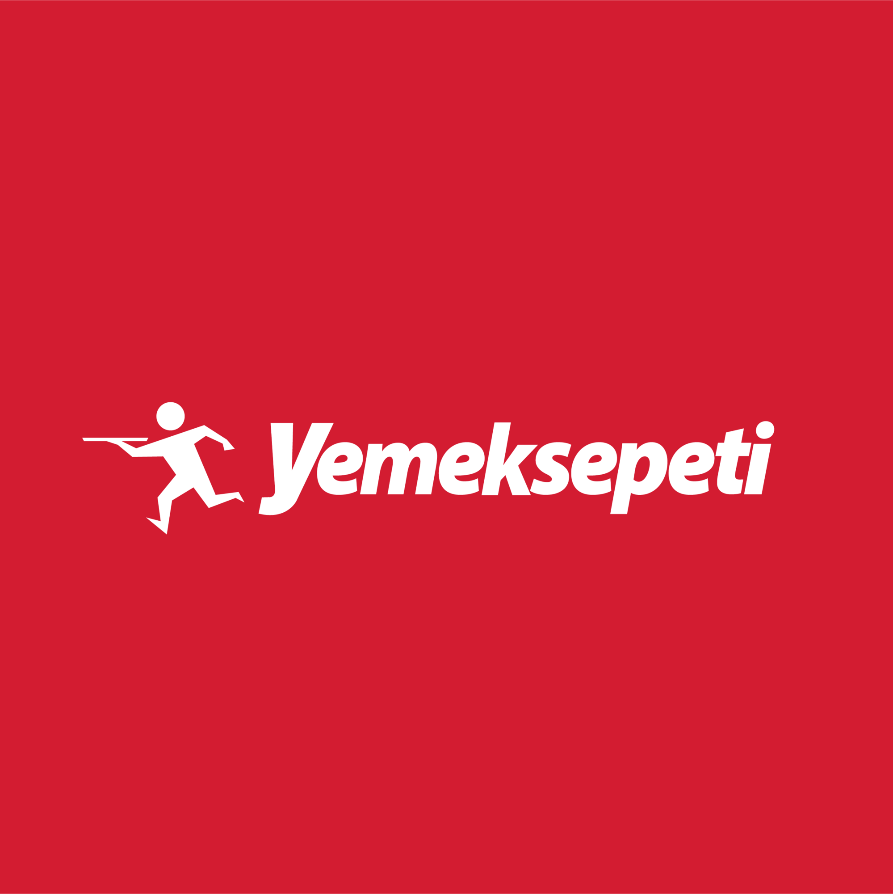
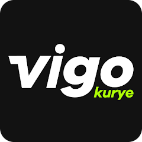
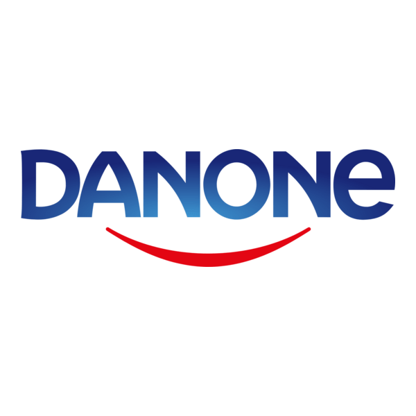

İstanbul merkezli operasyonlarımızla şehir içi ve şehirler arası taşımacılık, depolama, parsiyel ve dedike taşımacılık alanlarında çözüm odaklı hizmet sunuyoruz.
Yıllar içinde köklü markalarla kurduğumuz iş birlikleri, hizmet kalitemizin en güçlü kanıtıdır.



Taşıma ihtiyaçlarınızı bildirin, en kısa sürede size özel fiyat hazırlayalım.